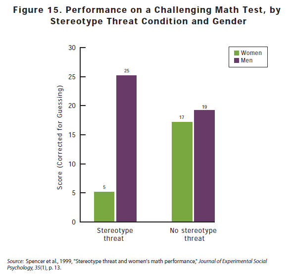

What is stereotype threat?
Stereotype threat refers to confirming, as a self-characteristic, a negative stereotype about one's group. As an example, stereotype threat would apply in a situation where Black students perform more poorly than White students on tests when their race is emphasized. The awareness that one's behavior may be viewed through the lense of racial stereotype can cause that individual's performance to change.
 What can be done to address this issue?
Since we know that stereotype threat is emphasized when subjects are aware that their behavior may be viewed through the lense of racial stereotype, it seems that the best way to reduce stereotype threat is to ensure that in fact behavior is not being viewed in any way through the lense of racial stereotype. One way to accomplish this, in the workplace, would be to ensure that job performance is based on objective benchmarks and goals, and where possible, is devoid of subjectivity. In addition, diversity training would be a good way to reduce the impact of stereotype threat.